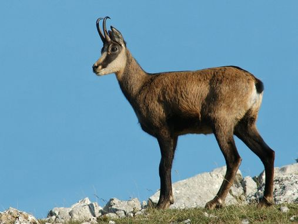

Généralités
Le chamois est un mammifère. Il vit dans les montagnes et notamment dans les Alpes, sa durée de vie est de 20 ans environ. C'est un herbivore.
Photo

Prédateurs
Ses prédateurs sont :
Extraits de la page Wikipédia dédiée au chamois
Introduction: Le chamois (Rupicapra rupicapra) est une espèce de mammifères de la famille des Bovidés et de la sous-famille des Caprinés. Les six sous-espèces reconnues vivent dans les zones rocheuses, les forêts et pâturages de montagnes, depuis les Alpes jusqu'à l'Anatolie, l'Azerbaïdjan et la Géorgie, en passant par les Vosges, le Jura, le Massif central4, les Balkans et les Carpates. Il existe également une population introduite en Nouvelle-Zélande. En 2021, on compte 543 370 chamois en vie.
Morphologie:Les chamois sont les plus petits représentants des caprinés (comprenant les mouflons et bouquetins). Ils mesurent en général pour les mâles adultes entre 125 et 135 centimètres du museau à la queue, entre 70 et 80 centimètres de haut au garrot. Il a des cornes d'environ 27 centimètres pour le mâle. Le poids est compris entre 22 et 40 kilogrammes. Les femelles leur sont presque toujours inférieures en poids et en taille. Les animaux ont un poids maximum en automne, alors qu’ils ont accumulé des réserves durant l’été. À la fin de l’hiver, le poids des chamois peut diminuer de moitié, et au début du printemps ils épuisent leurs réserves.
Longévité:Les chamois peuvent vivre jusqu’à 25 ans, mais peu dépassent 15 ou 16 ans. À partir de 10 ans commence la sénescence ou vieillesse. Leur poids diminue et cela jusqu'à leur mort. Les poils ne sont plus autant colorés, ils arborent une teinte grisâtre. Alors augmente également le taux de mortalité qui croît encore entre 14 et 15 ans. Le facteur le plus déterminant est l’usure des dents, car il conditionne la prise de nourriture, ainsi peu d’animaux peuvent dépasser 21-22 ans. Comme chez les humains, les femelles ont une plus grande espérance de vie. Les cabris ont entre 50 et 70 % d’espérance de vie en hiver et d’environ 90 % en été.
Pelage:La fourrure du chamois se compose de deux sortes de poils : les poils plus épais et longs de jarre et le duvet. Les poils de jarre (2 à 10 centimètres) forment l’essentiel du pelage, vient ensuite près du corps le duvet qui forme une couche laineuse protégeant l’animal contre le froid en hiver. Les marques faciales sont caractéristiques : tête et gorge blanchâtres, bande longitudinale d'un noir brun foncé entre la base des cornes et le museau. Sur l’échine, les chamois mâles portent une crinière, communément appelée « barbe », qui peut mesurer jusqu’à 30 centimètres lors du rut, alors qu’en été elle ne fait plus que 5 à 7 centimètres. Grâce à un muscle horripilateur, les poils de la crinière peuvent se dresser verticalement. La couleur du pelage varie selon les saisons : plus foncé en hiver que lors de la saison chaude (avec une raie dorsale brun foncé en été), il correspondrait à un besoin d’économie d’énergie, le pelage noir permettant de mieux profiter de l’énergie du rayonnement solaire. Après la mue de printemps, le pelage devient beige sale puis gris beige.
Cornes:Les chamois se distinguent aisément par leurs petites cornes d’un noir ébène qui contrairement aux cervidés sont conservées en permanence jusqu’à la fin de leur vie. De plus les femelles et les mâles les ont dès le plus jeune âge. Les cornes poussent dès la naissance, elles sont visibles dès le deuxième mois. L’accroissement de la gaine est maximum lors de la deuxième année de vie. Dès la sixième année, les cornes ne poussent plus que de 1 à 3 millimètres par an. Elles mesurent environ 15 centimètres pour 70 grammes (étuis seulement – contre 3 à 6 kilogrammes pour le bouquetin) mâles et femelles confondus.
Pour en savoir plus
Source 1 : ecologie.nature.free.fr
Source 2 : instinct-animal.fr
Résumé
| Le Chamois | Rupicapra rupicapra |
| Famille | Bovidae |
| Ordre | Artiodactyles |
| Longueur | 1,2 à 1,3 m |
| Hauteur | 70 à 80 cm |
| Poids | 35 à 60 kg |
| Pelage | brun roussâtre clair à brun foncé |
| Longévité | de 5 à 17 ans |
| Habitat | Zones montagneuses d'Europe et d'Asie |